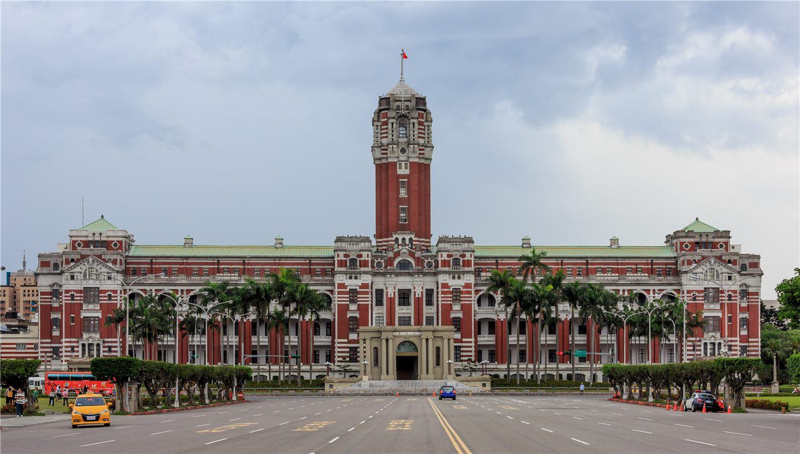
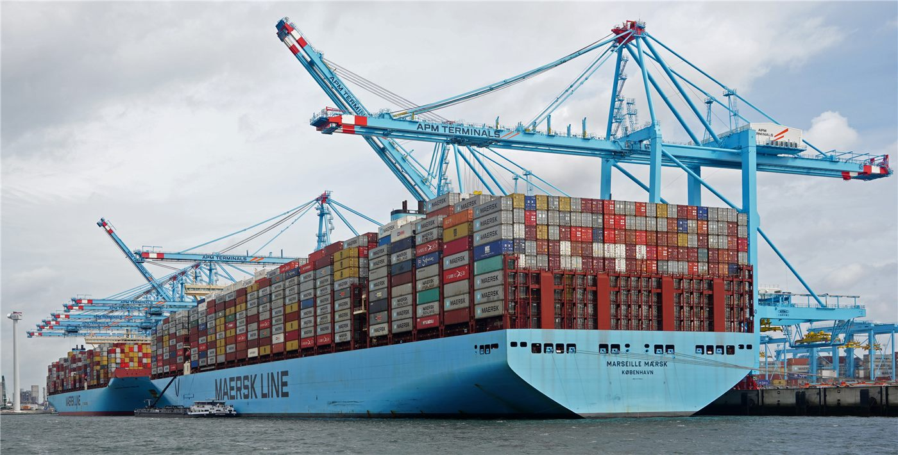

橋국제·중동
사진=Wikimedia Commons (자유 라이선스) · 기사 주제 관련 이미지
헤드라인美·이란, 전쟁 끝낼 '초기 합의'… 호르무즈 봉쇄 함께 푼다
트럼프 미국 대통령이 이란과의 휴전을 60일 연장하고 호르무즈 해협의 양측 봉쇄를 해제하는 초기 합의를 발표했다. 30일 내 전쟁 이전 수준의 통항 회복이 목표다. 핵·제재 등 난제는 후속 협상으로 넘겼다.
양념자 기자 · 2026.06.16
트럼프 미국 대통령이 이란과의 휴전을 60일 연장하고 호르무즈 해협의 양측 봉쇄를 해제하는 초기 합의를 발표했다. 30일 내 전쟁 이전 수준의 통항 회복이 목표다. 핵·제재 등 난제는 후속 협상으로 넘겼다.

트럼프 미국 대통령이 전후 이란 재건기금에 한국 기업 참여를 거론하면서, 플랜트·건설 강국 한국에 새 시장이 열릴지 주목된다. 다만 제재 해제가 전제다.

김민석 국무총리 후보자가 거취와 관련해 '6월 말∼7월 초'를 언급하면서, 여권 인선과 당 진용 개편의 시점을 둘러싼 관측이 커지고 있다.

한국의 수입물가 상승률이 코로나19 이후 가장 높은 수준을 기록했다. 반면 반도체 효과로 수출물가는 크게 올라, 명암이 뚜렷하게 갈렸다.


대만이 미국에서 도입하는 신형 F-16V '블록 70' 전투기의 자력 비행 인도가 임박했다. 29년 전 첫 F-16 도입 때와는 항속·정비·운용 면에서 조건이 크게 달라졌다.

대만 야당 인사의 워싱턴 방문을 계기로 양안 관계 접근법을 둘러싼 정당 간 논쟁이 다시 불붙었다. 여론 또한 단일하지 않다.

대만에서 0050·0056 같은 상장지수펀드(ETF)를 활용한 배당 투자가 가계 재테크의 한 흐름으로 자리 잡았다. 안정적 현금흐름을 좇는 투자 문화가 확산되고 있다.



강릉시가 해수욕장 공식 개장 전 주말과 휴일에도 안전요원을 배치하기로 했다. 이른 더위에 미리 찾는 피서객의 안전 공백을 줄이려는 조치다.

대만 신베이 중허의 한 아파트에서 새벽에 불이 나 3명이 병원으로 옮겨졌고, 욕실로 피신한 1명이 연기에 질식해 숨졌다.

과학도시 대전에서 가족과 청소년이 함께하는 1박2일 '사이언스 캠프'가 열린다. 20일부터 네 차례 진행된다.